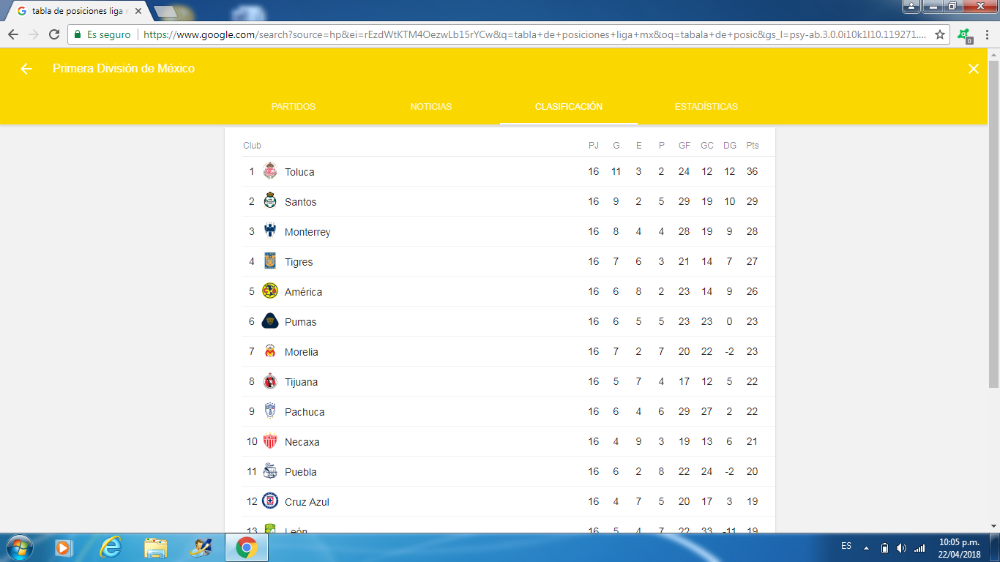

Futbolmania
Esta pagina es para los fanaticos del futbol , en cual encontraras diversa informacion del futbol , como jugadores, estadios , tablas de posiciones entre otros datos interesantes para su lectura
A continuacion veras una lista de las primeras posiciones en la liga mx
Si quieres saber mas de las posiciones da click en la imagen de abajo
- toluca
- Santos
- Monterrey
- Tigres
- America
 Tabla de posiciones liga mx
- America:
- Uno de los equipos mas grandes de mexico
A continuacion se vera una lista de los estadios mas conocidos del futbol mexicano
- Estadio azteca
- Estadio azul
- Nemesio diez
- Estadio unam
- Estadio corregidora
- Lionel Messi:
- Jugador argentino de 30 años de edad, alcual jugador delantero del barcelona
Da click a la imagen para saber mas de Lio messi
- Dybala:
- Jugador argentino de 23 años de edad actual jugador medio de la jucventus
- Neymar:
- Jugador brasileño de 25 años de edad actua jugador delantero del paris